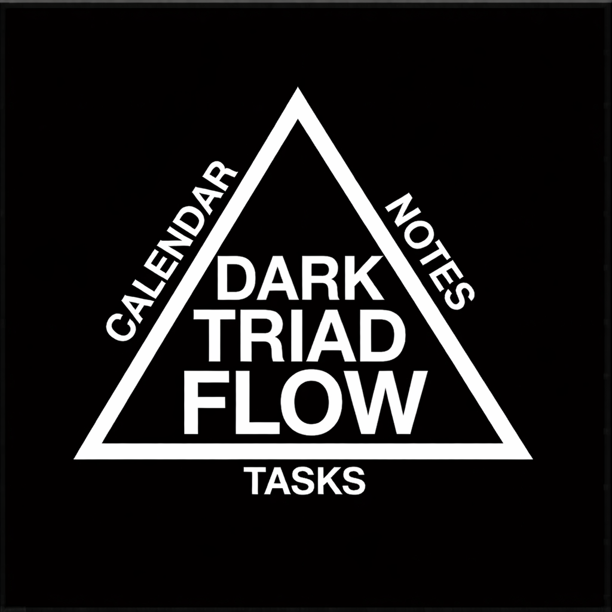

Notes
Notes
Day memory
Keep dated notes on their own page, anchored to the currently selected day and still connected to the same schedule and task state.
Attached work
Selected day
No tasks scheduled for this day yet.

Dark Triad FlowNotes
Keep dated notes on their own page, anchored to the currently selected day and still connected to the same schedule and task state.
Notes
Attached work